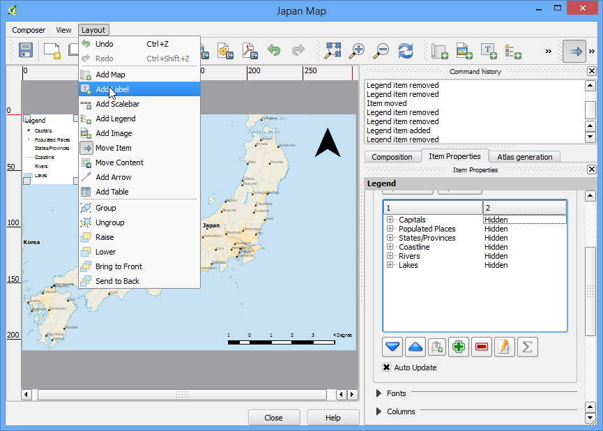
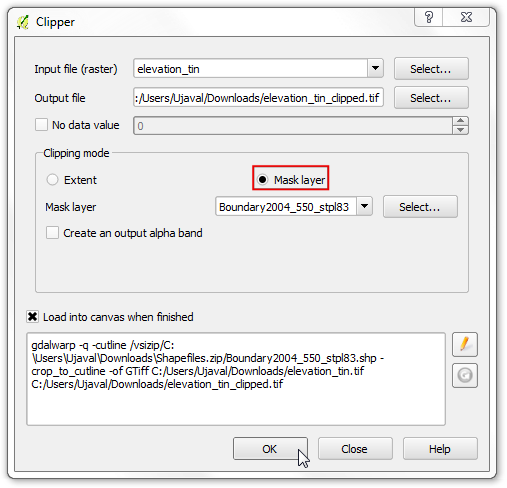
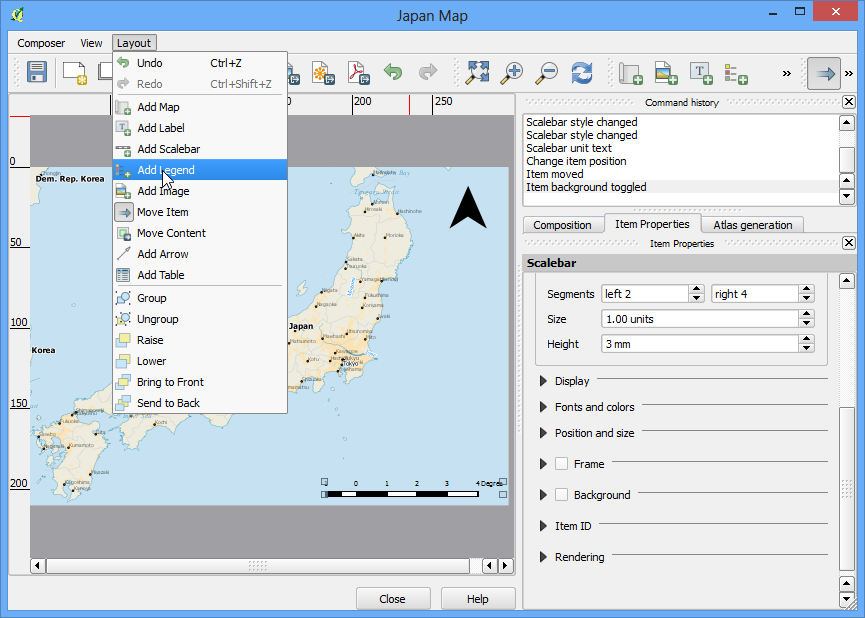

Zoeken en downloaden van gegevens van OpenStreetMap
Het verkrijgen van gegevens met hoge kwaliteit is essentieel voor elke taak in GIS. Een grote bron voor gratis en open gelicenseerde gegevens is OpenStreetMap(OSM) . De database van OSM bestaat uit straten, lokale gegevens en ook polygonen van gebouwen. Toegang krijgen tot gegevens van OSM in een indeling voor GIS is geïntegreerd in QGIS. Deze handleiding behandelt het proces voor het zoeken, downloaden en gebruiken van gegevens van OSM in QGIS.
Overzicht van de taak
Zoek naar London in de database van OSM, blader en selecteer een deel van de stad en extraheer alle locates van pubs als een shapefile.
Procedure
We zullen 2 plug-ins gebruiken om de taak te volbrengen. Zorg er voor dat u de plug-ins OSM Place Search en OpenLayers hebt geïnstalleerd. Zie Plug-ins gebruiken voor instructies over het downloaden van plug-ins.

De plug-in OSM Place Search zal zichzelf installleren als een Paneel in QGIS. U zult in QGIS een nieuw paneel zien, genaamd OSM place search....

De plug-in OpenLayers wordt geïnstalleerd onder het menu Plugins. Deze plug-in stelt u in staat toegang te krijgen tot basiskaarten van verschillende leveranciers QGIS. Laten we de basiskaart OpenStreetMap laden in QGIS door te gaan naar .

U zult zien dat een wereldkaart wordt geladen in QGIS.
Notitie
Indien u geen gegevens ziet - zorg er voor dat u online bent - omdat de tegels voor de basiskaart worden opgehaald vanaf het internet. U kunt ook het gereedschap Pannen gebruiken om het kaartvenster enigszins te verplaatsen, wat het vernieuwen van de basiskaart zal activeren.

Laten we nu eens zoeken naar London. Typ de query in het van Name contains... in het paneel OSM Place Search. U kunt met de muis over de resultaten gaan en de overeenkomstige plaats zal worden geaccentueerd op de kaart. Selecteer het eerste resultaat - wat de stad London in het VK is - en klik op de knop Zoom.

U zult de basiskaart zien verplaatsen en centreren rondom de stad Londen. U kunt het gereedschap Zoom gebruiken om te zoomen en het exacte gebied van uw interesse te selecteren. Voor deze handleiding kunt u inzoomen op het centrum van de stad, zoals weergegeven.

Nu kunnen we de in het kaartvenster weergegeven gegevens downloaden. Ga naar .

In het dialoogvenster Download OpenStreetMap data, kies Van kaartvenster als het Extent. Kies het pad en de naam voor het uitvoerbestand als london.osm.

Het gedownloade bestand met de extensie .osm is een tekstbestand in de indeling OSM XML. We moeten heet eerst converteren naar een geschikte indeling die voor QGIS eenvoudig te verwerken is. Ga naar .
Notitie
Nu we de functionaliteit OSM Place Search niet meer nodig hebben, kunt u nu op de knop Sluiten drukken om het uit het hoofdvenster te verwijderen. Als u het opnieuw wilt gebruiken kunt u het inschakelen via (Windows) of (Linux).

Kies het gedownloade london.osm als het Invoer XML-bestand. Noem het Uitvoer SpatiaLite DB-bestand london.osm.db. Zorg er voor dat het vak Maak connectie (SpatiaLite) na import is geselecteerd.

Nu de laatste stap. We moeten SpatialLite geometrie-lagen maken die kunnen worden bekeken en geanalyseerd in QGIS. Dit wordt gedaan door middel van .

Het bestand london.osm.db bevat alle objecttypen van de database van OSM database - Punten, Lijnen en Polygonen. GIS-lagen bevatten slechts één type object, dus dient u er een te kiezen. Omdat we zijn geïnteresseerd in puntlocaties van pubs, dient u hier te kiezen voor Punten (nodes) als het Export-type. U zou hebben gekozen voor Polygonen (open ways) indien u het wegennetwerk zou willen hebben. Noem het Uitvoer laagnaam london_points. GIS-gegevens heeft twee delen in zich - locatie en attributen. We zijn ook geïnteresseerd in de naam van de name van de pub - niet alleen de locatie ervan, dus moeten we die informatie ook exporteren. Klik op Vanuit DB laden in het gedeelte Geëxporteerde tags. Dit zal alle objecten ophalen uit het bestand london.osm.db. Selecteer de tags name en amenity. Bekijk OSM Tags om meer te leren over wat elk attribuut betekent. Zorg er voor dat het vak Voeg opgeslagen bestand toe aan kaart is geselecteerd en klik op OK.

U zult nu een nieuwe laag van punten zien, genaamd london_points, geladen in QGIS. Onthoud dat deze ALLE punten bevat die in de database van OSM staan voor het bekeken gedeelte. Omdat we alleen geïnteresseerd zijn in pubs, moeten we een query schrijven om alleen die te kunnen selecteren. Klik met rechts op de laag london_points en selecteer Open attributentabel.

U zult zien dat sommige objecten de waarde voor attributen pubs hebben, vermeld onder de kolom amenity. Klik op de knop Selecteer objecten m.b.v. reguliere expressie button.

Voer de uitdrukking “amenity” = ‘pub’ in en klik op Selecteren.

Terug in het kaartvenster van QGIS, zult u enkele punten zijn geaccentueerd in geel. Dat is het resultaat van onze query. Klik met rechts op de laag london_points en kies Selectie opslaan als....

Voer, in het dialoogvenster Vectorlaag opslaan als..., de naam voor het uitvoerbestand in als london_pubs.shp. Laat alle andere opties zoals zij zijn en zorg er voor dat de optie Voeg opgeslagen bestand toe aan kaart is geselecteerd. Klik op OK.

U zult een nieuwe laag zien in het kaartvenster van QGIS, genaamd london_pubs. Deselecteer de laag london_points omdat we die niet meer nodig hebben.

Het extraheren van het shapefile voor de laag met pubs is nu compleet. U kunt het gereedschap Objecten identificeren gebruiken om op een object te klikken en de attributen ervan te zien.